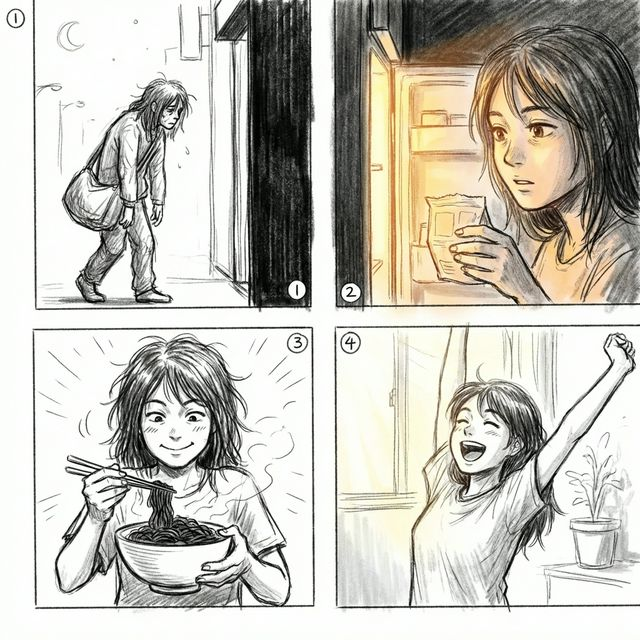
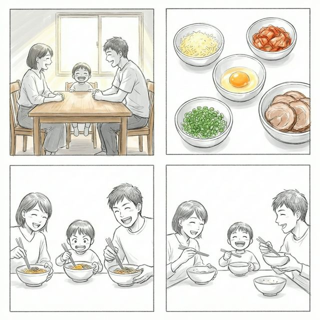

もし、あなたの冷蔵庫に
「柿川亭」のストックがあったら…

【CASE 1: 深夜の帰宅】
仕事でクタクタの帰り道。「何か食べたいけど、店は閉まってるし自炊は面倒…」
そんな時、冷蔵庫を開けるとそこには「柿川亭」が！スープがないからカロリー控えめ。夜食でも罪悪感は少なめです。
仕事でクタクタの帰り道。「何か食べたいけど、店は閉まってるし自炊は面倒…」
そんな時、冷蔵庫を開けるとそこには「柿川亭」が！スープがないからカロリー控えめ。夜食でも罪悪感は少なめです。

【CASE 2: 忙しい合間の昼食】
リモートワーク中、次の会議まであと30分。「カップ麺じゃ物足りないけど、凝った料理はしてられない…」
柿川亭なら茹で時間わずか3分。パッと作ってガッツリ満足。午後の仕事もエネルギッシュに！
リモートワーク中、次の会議まであと30分。「カップ麺じゃ物足りないけど、凝った料理はしてられない…」
柿川亭なら茹で時間わずか3分。パッと作ってガッツリ満足。午後の仕事もエネルギッシュに！

【CASE 3: 週末の家族団らん】
週末のランチ、家族みんなで何食べよう？「お店に行くのは大変だけど、みんなが喜ぶものがいいな…」
冷蔵庫にある余った食材を自由にトッピング。自分だけのオリジナル油そば作りに、子供たちも大喜び！
週末のランチ、家族みんなで何食べよう？「お店に行くのは大変だけど、みんなが喜ぶものがいいな…」
冷蔵庫にある余った食材を自由にトッピング。自分だけのオリジナル油そば作りに、子供たちも大喜び！